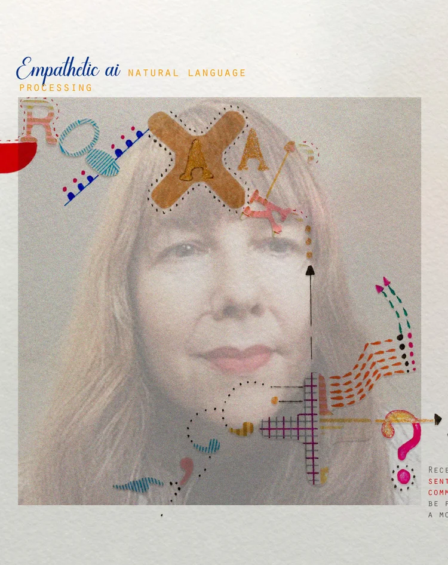

Heidi Stokes is a Multimedia artist with an MA in Fine Art from Central St Martins. Her work spans various media, including film, drawing, collage, animation, interactive touch boards, and more recently explores themes related to technology and society.
Notable works include "Swim to Work." Heidi was a finalist for the BOC emerging artist awards. Her films have been showcased internationally at institutions like the ICA and Barbican, and in numerous internationally recognized film festivals around the world.
Her recent practice explores the intersection of art and digital culture. Heidi has in recent years collaborated with experts in artificial intelligence and computer science, particularly focusing on AI's emotional and empathetic capabilities.

L4 International Preparation for Fashion, University of the Arts London 2020 – present
London College of Fashion, University of the Arts London 2019 – present
London College of Fashion, University of the Arts London 2019 – 2022
UAL Short Courses Ltd 2019 – 2022
London College of Fashion 2013 – 2016
Hourly London Artscom 2011 – 2019
London College of Fashion, University of the Arts London 2003 – 2019
20261 event
Group Show: The Stable Gallery Fri 27 March - 12th of April. Exhibition
20251 event
Science Gallery Monterrey Shortlisted Finalist
20243 events
Film program exploring how diversity fuels the interconnectedness of life. Official Selection labocine.com/issues/the-ecosystem
Modal Gallery, Manchester Metropolitan University | SODA Building | 14 Higher Chatham St | Manchester | M15 6ED Exhibition & Presentation
Shortlisted from 50 entries out of 1,800 applicants from around the world Shortlisted alpinefellowship.com/visual-art-prize
20236 events
Labocine is a singular, ever-evolving, hybrid streaming platform that showcases science in cinema. Pick of the Week labocine.com/films/unhindered-ai
Wednesday 11th October, 18:00-19:30 | Strand Campus, Level 6, Anatomy Lecture Theatre K6.29 | Hosted by Department of Digital Humanities Screening
Fri 08 Sep 7-9pm, Sat 09 – Mon 11 Sep 12-4pm Exhibition
Sunday 29 July 4pm-8pm | Urban Room Folkestone Event
27th-30th October | Collaboration with Dr Mercedes Bunz | With thanks to King's College London & Creative AI Lab Exhibition & Talks
June Program "STANDING OUT" (Program #83 | Season 8) | Sunday, June 25, 2023 In Competition
20226 events
Thu 7th December, 19:30-22:30 | The Underdog, Guildhall Place, Cardiff CF10 1EB Screening
28-30 November 2022 | Athens Official Selection
5th November 2022, 2pm | Zita Cinema, Stockholm, Sweden European Film Program
17th-20th March 2022 Official Selection
16th-27th March 2022 | Special panorama screening of best animation from around the world Best of World Animation
31st May - 7th June 2022 | Palace of Culture, Pernik, Bulgaria Academy Award® Qualifying Best Experimental
20214 events
Thursday 19/8, 10:15 | Slovenian Cinematheque Screening
Sunday 25th July 2021, 4pm | Cardiff | Shorts program "Mind" Screening
10/03/2021 - 17/03/2021 Official Selection - Animated Short
20207 events
British Council Archive Travel Grant Awarded
17th-19th November 2020 | Cinenso.com Online Screening
October 24, 2020 | SHORTS 1: MIND In Competition
Kyle Marks Projects | During Covid-19 Online Exhibition
8 March - 5 April 2020 | Works on paper by over 100 artists Exhibition transitiongallery.co.uk
Sunday 22/03/2020, 12:00-14:00 | Cine Drasi, Vrilissia | Available online in Greece 6-8th November Official Selection athensanimfest.eu
Episode 167 | Available for three months Selected
20198 events
30th November 2019 | Cineworld, Cardiff Official Selection
21st-24th November 2019 | Athens, Greece Official Selection
4-13 October 2019 | Cinematica Eforie & Cinema Elvire Popesco Oscar® Qualifying In Competition
Sat 14 Sep, 4pm | Barbican Cinema | "Lonely Two-Legged Creatures" programme BAFTA Recognised UK Premiere
13-21 July 2019 | The Treasury Cinema In Competition
Saturday 1st June, 6pm | Stadtkino im Künstlerhaus | "Animation Avantgarde" Academy Award® Qualifying Official Selection
"We're always on the lookout for interesting, original work..." Featured Review
Saturday 16/03/2019, 20:00-22:00 | Oikia Theotokopoulou, Athens Official Selection
20184 events
September 28th 2018 | Theme: "Upbringing" | Partnership with Researchers' Night Screening
Monday 17th September 2018 | "Borders and Territories" + Q&A Screening
Thursday 26th April, 09:00-09:30 | "Encounters" programme Screening
Wednesday 21.03, 17:00 | Muza Cinema | FOCUS: IN OR OUT / Representing British Animation Official Selection
201714 events
26th-29th October 2017 | Centro Cultural Casa Talavera, Mexico City | 4th Edition "Transmutations" Official Selection
9th-12th November 2017 | Athens, Greece Official Selection
9th-12th November 2017 | Mexico Official Selection
Saturday 8th October 2017, 5:30-7:30pm | Shepparton, VIC, Australia Screening
8th October, 8-9:30pm | Geneva, Switzerland | DOC'ANIM PROG.2 International Competition
25th September 2017, 12 midday | Watershed, Bristol | Cinema 1 BAFTA Recognised Official Selection
6-17th June 2017 | Mon 12 Jun, 3:45pm | Event Cinemas George St Official Selection
Auckland | Curated by Malcolm Turner Shortlisted Finalist
Saturday 8th July, 2:30pm | Empire Cinema, Leicester Square Official Selection
Saturday 17th June, 6:15pm | Rich Mix Cinema | "DECISIONS, DECISIONS" In Competition
Exploring real-world technologies and their imaginary counterparts Selected
Monday 19th June, 5:15pm | ACMI, Federation Square | International Program 1 In Competition
18-21 May | 23 Mitropoleos str, Athens Official Selection
Sunday 19/03/2017, 18:15-20:00 | Cinema Trianon | EXPERIMENTAL 1 Official Selection
20168 events
28 Nov - 1 Dec 2016, 18:00-18:50 | ROMANTSO, Athens Official Selection
Wednesday 19th October 2016, 10:00pm | Spectacle Theater, New York Official Selection
2nd-7th September 2016 | Hackney House, London Official Selection
8th-9th July 2016 | Central Saint Martins & Lethaby Gallery Screening
19-26 June | ACMI, Federation Square | Installation Animation section In Competition
19-22 May | Athens, Greece Official Selection
March 5th, 15:45 | Metro Cinema Culture House, Vienna | "Work Affairs" category Official Selection
10th January 2016, 4pm | ICA London | "New Shorts: Experiments - Leftfield & Luscious" BAFTA Recognised Official Selection
20152 events
5-7 November 2015 | Centro Cultural Universitario Tlatelolco, Mexico City Official Selection - Professional Category
8-16 May 2015 | Alianza Francesa de Barranquilla, Colombia Selected
20144 events
11th November 2014, 6-10pm | Screening and talk celebrating women filmmakers Screening & Talk
25th May 2014, 12-7pm | Rich Mix Cinema, Bethnal Green Screening
July 26, 28 & August 2, 2014 | Andros Island, Greece Selected
Sun 16.03, 17:30 | English Cinema Haydn, Vienna | "Fair Play" category Selected
20133 events
1-6 August 2013 | Varna, Bulgaria Selected
Brazil Selected
11-14 July 2013 | Siracusa, Italy Selected
20125 events
Beijing, China Selected
1 Dec 2012 - 8 Jan 2013 | La Soirée de Votanique | Curated by Olga Daniylopoulou Exhibition
India/Sattal & Philippines/Manila | Video art in a global context Selected
7th July 2012 | Kalamata, Greece Selected
5-7 July 2012 | Archaeological Museum of Messenia | Parallel event of Festival Miden Exhibition
20116 events
21st October 2011 | Bethnal Green, London | Live film score performance Live Screening
31 Aug - 3 Sept 2011 | Shams - The Sunflower, Beirut, Lebanon Selected
1-10 September 2011 | Budapest Selected
30 March - 1 May 2011 | Contemporary Art Centre of Thessaloniki, Greece Selected
Thursday 13th January 2011, 7:30pm Screening
1st November 2011 | The Duchess, London Screening
20107 events
1st & 3rd October 2010 | London Selected
6-8 August 2010 | Fordham Fest Selected
17th July 2010 | Parc del Turonet, Spain Selected
17th May 2010 Screening
20th May 2010 | Achromat Gallery, Brighton Screening
2-6 March 2010 | Brixton, London Screening
23 July - 14 September 2010 | Cornerhouse, Manchester Exhibition
20094 events
December 2009 | London | Film screening and film still exhibit Exhibition & Screening
Selected for distribution and representation Distribution Deal
December 2009 | London | Film still exhibit Exhibition
1st October 2009 | The Duchess, London Screening
20083 events
October 2008 Exhibition
October 2008 Selected
March 2008 Exhibition
20071 event
June 2007 | London Exhibition
20064 events
G & A Gallery, Surrey Hills Exhibition
291 Gallery, London Exhibition
London | Text by Sally O'Reilly Publication
Norwich Art Centre Shortlist Nomination
20045 events
Soup Projects, Sevenseven, London Exhibition
Konti Gallery, Athens, Greece Exhibition
Million Miles Per Hour, London Online Exhibition
Great Portland Street, London Exhibition
Arch Gallery, London Exhibition
20033 events
Century Gallery, London Exhibition
Marshall Street Space, London Exhibition
Transition Gallery, London Exhibition
20022 events
Ols & Co. Gallery, London Exhibition
Transition Gallery, London Exhibition
- 2019 British Council Travel Grant — Vienna Shorts Film Festival
- 2017 "For Ray" Shortlisted Finalist — Animation NOW! New Zealand
- 2013–16 Practitioner in Residence — London College of Fashion
- 2009 Artist Residency — Arts Claims Impulse, Berlin
- 2005 Finalist — BOC Emerging Artist Award
- 2005 Shortlist Nomination — Norwich Art Centre "Art and Architecture" Competition
- 2005 AA2A Artist Residency — Artists Access to Art Colleges, Barnet College
- 2001 AHRB Grant Awarded
- IDEA De-corator Catalogue Project — London (Text by Sally O'Reilly)
- "Sneeze" Catalogue — Arch Gallery
- Arty-tecture Summer 2003 — Transition Gallery
- THE CUT NEWSPAPER — LCF December Issue
- Unrealised Projects Volume 1-4 — Available at Tate Modern and bookstores
- Animacall 2011 Publication — Thessaloniki, Greece